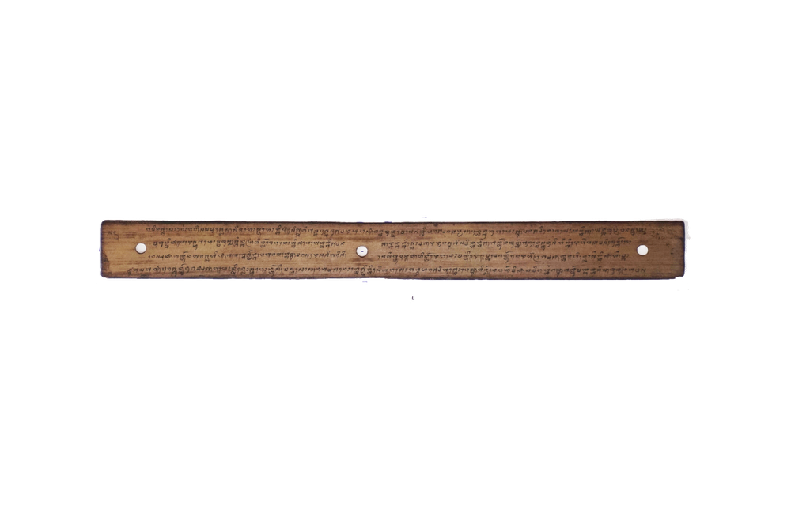

INDAR JAYA
-

Ejaan Latin:
153. si engkis raksasa no ngasa,engkakak banjur muni.To manusya wanen mun deqnaraq pada,lite mesaqmu bani,Indardewa no nimbal,apa yaq kutakuttang,sida kawula nuq lewih,aku masih ya,pada papyaq anuq Lewih. Raksasa nengkakak aneh mu ku pyaq ji anak,sida jari anakku jati,aku akuq amaq,lndardewa no nimbal,muda suka akuq anak pacirin,apa yaq da bengku,raksasa nengkakak muni. Ne araq kulambi ku beng sida,gunan kulambi sini,apa kameleqda,salapuqna katkan,yen taprang dalem aiq,yen leq awang-awang,atawa leq dalem bumi. Yen leq darat aku lasing ujuttang,adeqku aru laiq, ·Indardewa suka,banjuma angkiq ya gancang,kulambi banjuma kawih,banjuma pamit lekaq,raksasa nengkakak muni. Aloh anakku onyaq-onyaq nu ingtang,maraq uningku sini,Indardewa lumbar,blat lendang tama gawah. Iweq sasato nu dait,
Arti Indonesia:
153. yang mendengkur,. si raksasa yang tidur itu terbangun,tertawa ngakak lalu berbunyi.Ha ha manusia pemberani tanpa tanding,datang kemari engkau sendiri yang berani,Indardewa itu menjawab,apa yang kutakuti,tuan adalah hamba Allah,aku juga begitu,sama-sama ciptaan Allah kuasa.Raksasa ngakak baiklah kujadikan anak,engkau jadi anakku sejati,aku akuilah ayahmu,lndardewa menjawab,bila engkau sudi mengaku anak sendiri,apa yang akan engkau berikan padaku,raksasa mengakak berujar.Ini ada baju kuberikan engkau,gunanya baju ini,apa yang kau kehendaki,semuanya terpenuhi,bila kita berperang di dalam air,bila di awang-awang,atau di dalam tanah.Bila di darat aku ini niatkan,agar segera aku datang,lndardewa gembira,sambil diambilnya segera,baju lalu dipakainya,lalu berpamitan pergi,raksasa ngakak berujar.Pergilah anakku baik-baik itu ingatkan,Indardewa berangkat,melintasi padang masuk hutan,banyak hewan dijumpainya,
Arti Inggris:
153.